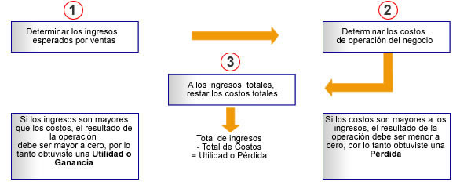

¿Cómo determino el punto de equilibrio para mi negocio?
En este paso determinamos un dato muy importante para tu negocio, es la meta mínima de ventas para que tu negocio gane utilidades y no pierda. A esto se le llama punto de equilibrio. Es decir, el punto de equilibrio te indica el número de productos que debes vender para no perder. Es como el "termómetro del negocio”.
Antes de iniciar con el tema de punto de equilibrio hagamos un resumen de tu avance hasta este momento que nos permitirá recordar algunos aspectos importantes para este tema. Haz clic en cada número para conocer la información.
